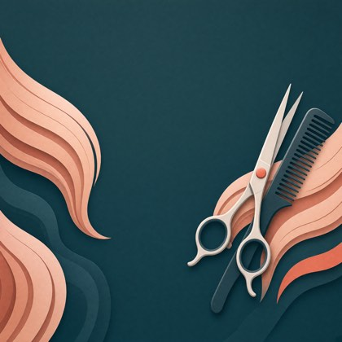

Front passa storeCard zbudowany na wymiarach z dokumentacji Apple, z Twoją grafiką w slocie
strip.png. Karta ma tu 375 px szerokości, czyli 375 pt — fizycznie tyle samo, ile na iPhone.
Grafika jest wycięta do proporcji 2,604:1 i wstawiona bez skalowania w CSS. Kolor karty
(#1c4149) jest wypróbkowany z grafiki, dokładnie tak, jak ma to robić dominantColor.ts
z sekcji 2.6 specyfikacji.
strip.png przy zapisie wariantu. Kontrast wychodzi ponad 7:1 niezależnie od tego, co wygeneruje model.Wszystko poniżej pochodzi z Pass Design and Creation i z bieżącej dokumentacji walletpasses,
nie z oglądu cudzych kart.
| Element | Wymóg dokumentacji | Ta strona |
|---|---|---|
| szerokość passa | 375 pt | 375 px = 1:1 |
strip.png | 375 × 144 pt dla kart sklepowych → @2x 750×288, @3x 1125×432 | plik 750×288, wyświetlany 375×144 |
| pole główne | dokładnie 1, rysowane na stripie | saldo punktów, na stripie |
| pola nagłówkowe | do 3 — jedyne widoczne, gdy karty leżą w stosie | 1 (poziom) |
| secondary + auxiliary | do 4 razem w tym stylu passa | 2 (klient, przelicznik) |
logo.png | do 160 × 50 pt | monogram 34×34 — merchant bez pliku |
icon.png | 29 × 29 pt, wymagany (powiadomienia, e‑mail) | nie dotyczy podglądu |
background.png | tylko eventTicket | niedostępne — stąd cały pomysł ze stripem |
thumbnail.png | proporcja 2:3 – 3:2 | banner 21:8 odrzucony przez PassKit |
| kolory | backgroundColor, foregroundColor, labelColor jako trójki RGB | #1c4149 + biel |
Wyrównania pola głównego na stripie Apple nie precyzuje. Pisze tylko, że pole jest rysowane na stripie i że jest jedno. Wallet w praktyce wyrównuje je do lewej, ale to obserwacja, nie zapis w dokumentacji — dlatego na tej stronie jest przełącznik. Kliknij „pole główne po prawej" i porównaj: przy wyrównaniu do prawej wariant A czyta się bez zarzutu, a przy wyrównaniu do lewej potrzebuje scrimu z wariantu C. Rozstrzyga to jedno spojrzenie na prawdziwą kartę na telefonie — i to samo spojrzenie, które ma potwierdzić, że strip w ogóle się rysuje.
background_color, a saldo leży teraz na grafice. Po wypaleniu scrimu kontrast jest znany z góry —
i to jest drugi argument, żeby scrim wypalać, a nie liczyć jasność pikseli w przeglądarce.Grafika źródłowa i pas, który wchodzi na kartę — 786 z 2048 pikseli wysokości.

| Krok | Rozmiar |
|---|---|
| grafika źródłowa | 2048 × 2048 |
| kadr 2,604:1 | 2048 × 786 (od y = 707) |
| plik na tej stronie | 750 × 288 (@2x) |
| docelowo do PassKita | 1125 × 432 (@3x) |
| generowane przez Flux | 1120 × 432 (wielokrotność 16) |
docs/superpowers/specs/2026-08-19-ai-card-image-creator-design.md.
Źródła wymiarów i limitów pól:
Pass Design and Creation,
Creating the Source for a Pass,
Pass.
Kod QR jest zaślepką — prawdziwy generuje PassKit z identyfikatora członkostwa.